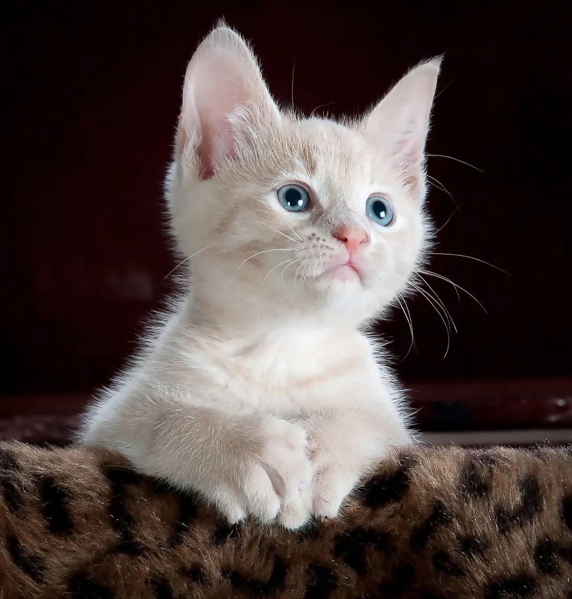
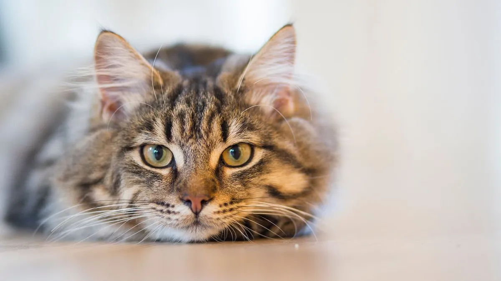
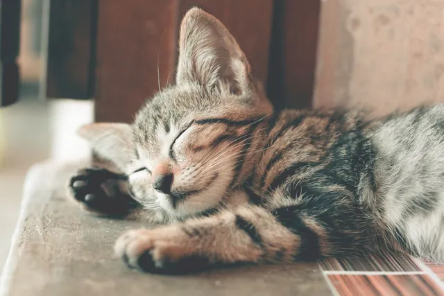
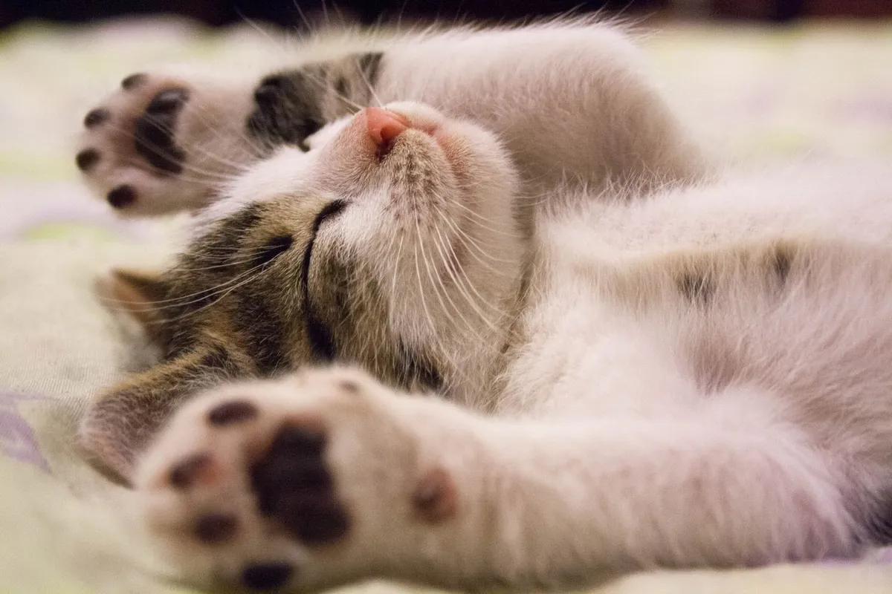

A small celebration of cats
Life, with
a little more
cat.
Expert nappers. Curious roommates. Small, magnificent weirdos. A place to pause and get to know them a little better.
Follow your curiosityOne feline world. Two ways to see it.
Try the visual style switch above.

The field guide
Small paws.
Big personalities.
There is a whole world behind that look.
Pick a starting point.
An ordinary day, beautifully done
Professional
window watchers.
A sunny patch. Something moving outside. A cardboard box that absolutely needed inspecting. Cats have a way of making the everyday look interesting.
- Favourite assignment
- Inspecting the new box
- Office hours
- On their own terms
- Special skill
- Finding the cosy spot
More than a first impression
A coat is not
a personality.
Stripes, patches, long fur, short fur: there are many ways to look like a cat. A tabby is a coat pattern, not a breed. And the best way to know a cat is to spend time with that individual.
- Tabby
- Stripes, spots or swirls
- Tortoiseshell
- A mix of dark and orange
- Bicolour
- White alongside another colour
The pleasure of small routines
Same spot.
Another perfect nap.
Watching, exploring, grooming, resting, then doing it all again. Each cat has their own little routine. Give them room to approach, investigate or take a break.
- Watch
- Notice their favourite places
- Play
- Make time to be curious
- Pause
- Let them choose some space
The unofficial cast
A mood for
every moment.
No job. No deadlines.
Somehow, a very full schedule.

The quiet observer
Knows what you did. Has no comment.

The nap enthusiast
Currently out of office.

The weekend specialist
A masterclass in taking it easy.
Less scrolling.
More slow blinking.
A conversation without words
Read the room.
And the cat.
Small signals, a bigger picture.
Always look at the whole cat and the context.
A few clues. Never the whole story.
01 The tail
A tail held up can be a friendly greeting. A swishing tail may mean something quite different. Look at the pace and the rest of the body.
02 The ears
Ears can turn towards a sound. Flattened or backward ears can signal discomfort; give the cat room rather than insisting on contact.
03 The eyes
Soft eyes and a slow blink can be signs of feeling relaxed. Try a gentle slow blink, without staring or moving into their space.
04 The posture
A loose body and a tense crouch tell different stories. A cat showing their belly is not necessarily asking for a belly rub.
Stay curious.
Take the nap.